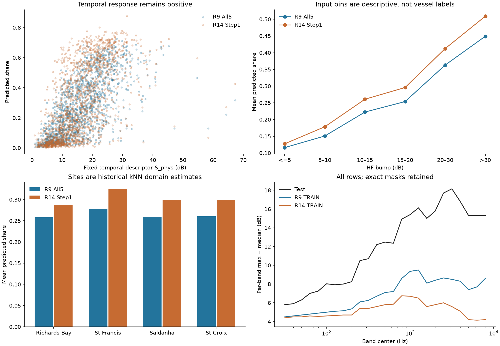
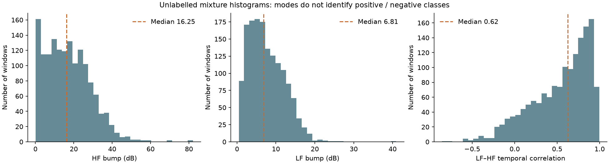
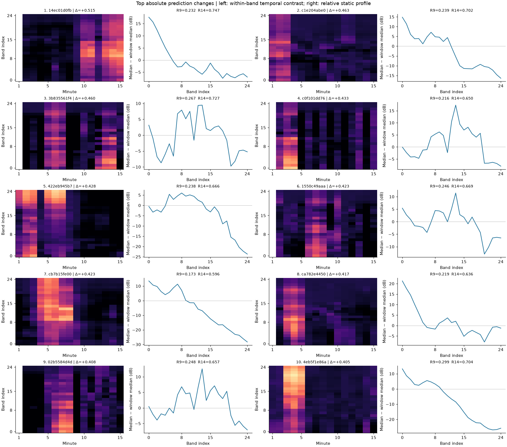
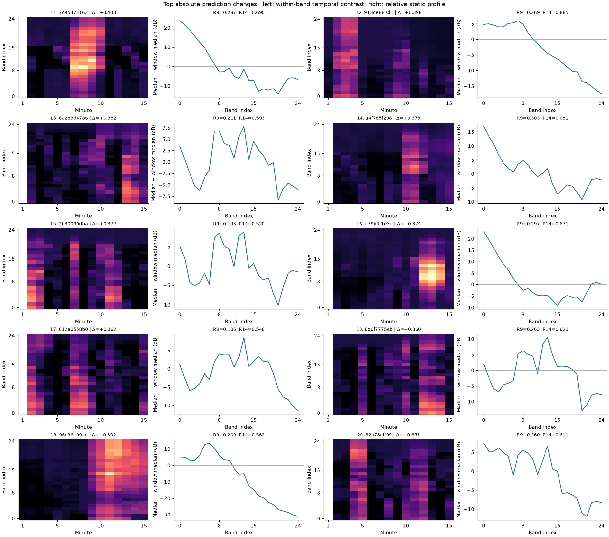
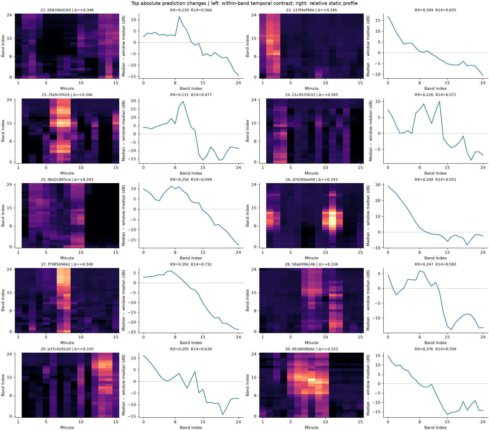
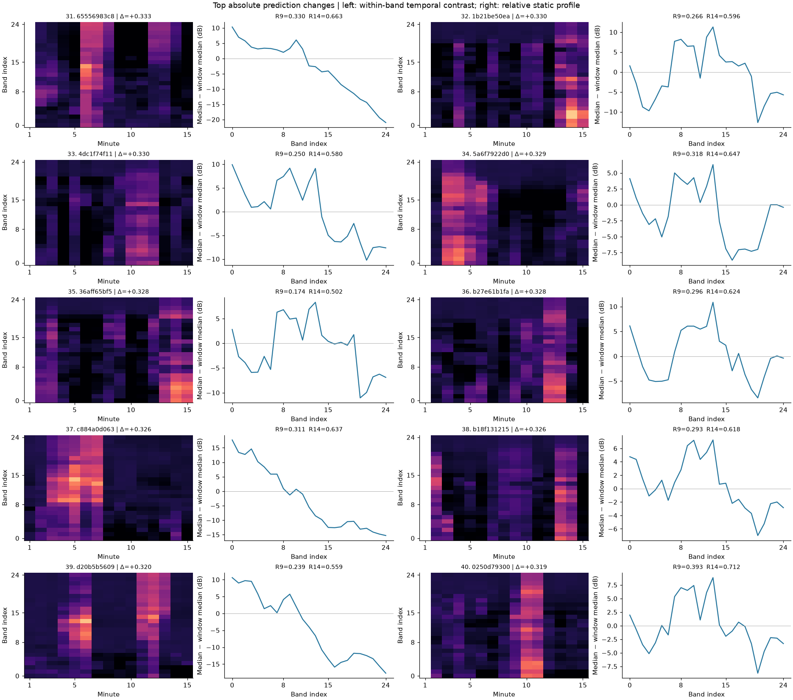
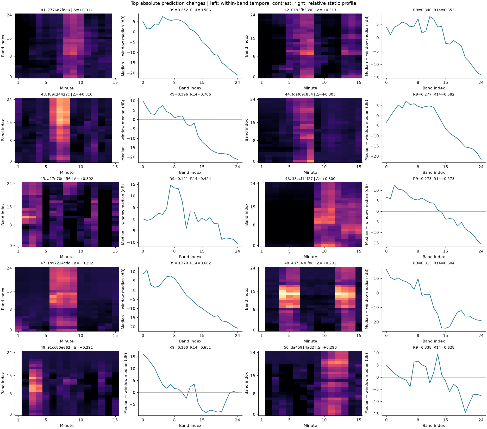

TFGrid 일시 정지 · 추가 Fold 보류 · 새 제출 CSV 생성 보류
1,500개 Test 창과 저장 예측57열을 직접 대조했습니다. 새 학습·모델 추론·정답 역산·보정은 없습니다.
중요: 시간 변화를 무시했다거나 정적 PCA/LF 특징이 단독 원인이라는 주장은 현재 기술통계로 확정되지 않습니다. TRAIN–Test의 HF 시간 돌출 분포 차이는 실제로 확인됐습니다.
| 모델 | 출력 | 평균 | RMS | 중앙값 | >=0.90 비율 | R9 Pearson | R9 Spearman |
|---|---|---|---|---|---|---|---|
| R5 CNN | share | 0.35466 | 0.44523 | 0.30689 | 0.00067 | 0.88290 | 0.90151 |
| R5 CNN | score | 0.92009 | 0.94344 | 0.99615 | 0.86133 | 0.52292 | 0.79116 |
| R9 Tree5 | share | 0.26415 | 0.32563 | 0.24611 | 0.00000 | 0.98328 | 0.98675 |
| R9 Tree5 | score | 0.59212 | 0.60551 | 0.59181 | 0.00000 | 0.98061 | 0.98390 |
| R9 All5 | share | 0.26474 | 0.32698 | 0.23273 | 0.00000 | 1.00000 | 1.00000 |
| R9 All5 | score | 0.60768 | 0.61964 | 0.59960 | 0.00000 | 1.00000 | 1.00000 |
| R14 Step1 | share | 0.30333 | 0.38690 | 0.24816 | 0.00000 | 0.92120 | 0.93602 |
| R14 Step1 | score | 0.45932 | 0.50040 | 0.43002 | 0.00067 | 0.87146 | 0.89442 |
| R14 Wide CNN | share | 0.30982 | 0.40033 | 0.24732 | 0.00067 | 0.90136 | 0.91650 |
| R14 Wide CNN | score | 0.30982 | 0.40033 | 0.24732 | 0.00067 | 0.82828 | 0.87268 |
| R14 FDY | share | 0.26251 | 0.34613 | 0.19133 | 0.00000 | 0.91112 | 0.92890 |
| R14 FDY | score | 0.26251 | 0.34613 | 0.19133 | 0.00000 | 0.84535 | 0.89912 |
| R14 iTransformer | share | 0.25187 | 0.32817 | 0.19120 | 0.00000 | 0.89307 | 0.90326 |
| R14 iTransformer | score | 0.25187 | 0.32817 | 0.19120 | 0.00000 | 0.85187 | 0.90456 |
| R14 Tree baseline5 | share | 0.26835 | 0.32920 | 0.25235 | 0.00000 | 0.97143 | 0.97397 |
| R14 Tree highshare5 | share | 0.32935 | 0.41148 | 0.29469 | 0.00000 | 0.92049 | 0.93627 |
R14 NN score=share. R14 각 Tree raw classifier는 미저장입니다.
| feature | series | Pearson | Spearman |
|---|---|---|---|
| bump_high_db | R9_all5.share | 0.57019 | 0.60136 |
| bump_low_db | R9_all5.share | 0.41019 | 0.50233 |
| corr_low_high | R9_all5.share | 0.66810 | 0.72159 |
| naive_share_q20 | R9_all5.share | 0.55716 | 0.55502 |
| S_phys_safe_mid_db | R9_all5.share | 0.67112 | 0.72792 |
| bump_high_db | R9_all5.score | 0.63356 | 0.68398 |
| bump_low_db | R9_all5.score | 0.31587 | 0.41536 |
| corr_low_high | R9_all5.score | 0.61444 | 0.66255 |
| naive_share_q20 | R9_all5.score | 0.47447 | 0.48086 |
| S_phys_safe_mid_db | R9_all5.score | 0.69771 | 0.76511 |
| bump_high_db | R14_step1.share | 0.51369 | 0.56174 |
| bump_low_db | R14_step1.share | 0.55400 | 0.59236 |
| corr_low_high | R14_step1.share | 0.68833 | 0.73927 |
| naive_share_q20 | R14_step1.share | 0.60044 | 0.58690 |
| S_phys_safe_mid_db | R14_step1.share | 0.63015 | 0.69572 |
| bump_high_db | R14_step1.score | 0.53393 | 0.57607 |
| bump_low_db | R14_step1.score | 0.52488 | 0.57377 |
| corr_low_high | R14_step1.score | 0.66674 | 0.71594 |
| naive_share_q20 | R14_step1.score | 0.57155 | 0.56578 |
| S_phys_safe_mid_db | R14_step1.score | 0.63731 | 0.69616 |
| feature | series | Pearson | Spearman |
|---|---|---|---|
| PCA_positive_residual_RMS_db | R9_all5.share | 0.03744 | 0.09096 |
| PCA_positive_residual_RMS_db | R14_step1.share | 0.03803 | 0.09109 |
| PCA_positive_residual_RMS_db | R14_step1.score | 0.03984 | 0.08039 |
| MF_minus_LF_mean_db | R9_all5.share | 0.17645 | 0.20792 |
| MF_minus_LF_mean_db | R14_step1.share | 0.13665 | 0.15966 |
| MF_minus_LF_mean_db | R14_step1.score | 0.12961 | 0.13777 |
| LF_anchor_residual_RMS_db | R9_all5.share | 0.21206 | 0.26735 |
| LF_anchor_residual_RMS_db | R14_step1.share | 0.16470 | 0.22399 |
| LF_anchor_residual_RMS_db | R14_step1.score | 0.16871 | 0.21395 |
| group | series | n | mean | median | rms |
|---|---|---|---|---|---|
| low_temporal_predeclared | R9_all5.share | 138 | 0.05535 | 0.04163 | 0.07225 |
| low_temporal_predeclared | R14_step1.share | 138 | 0.05236 | 0.03417 | 0.07425 |
| low_temporal_predeclared | R14.nn_bg_cnn.share | 138 | 0.05068 | 0.03008 | 0.07401 |
| low_temporal_AND_high_PCA_positive_residual_RMS_db | R9_all5.share | 10 | 0.07625 | 0.07354 | 0.09415 |
| low_temporal_AND_high_PCA_positive_residual_RMS_db | R14_step1.share | 10 | 0.09047 | 0.07947 | 0.11567 |
| low_temporal_AND_high_PCA_positive_residual_RMS_db | R14.nn_bg_cnn.share | 10 | 0.08493 | 0.07694 | 0.11207 |
| low_temporal_AND_high_MF_minus_LF_mean_db | R9_all5.share | 19 | 0.08078 | 0.07779 | 0.09372 |
| low_temporal_AND_high_MF_minus_LF_mean_db | R14_step1.share | 19 | 0.07031 | 0.04300 | 0.09621 |
| low_temporal_AND_high_MF_minus_LF_mean_db | R14.nn_bg_cnn.share | 19 | 0.06113 | 0.02805 | 0.09322 |
| low_temporal_AND_high_LF_anchor_residual_RMS_db | R9_all5.share | 8 | 0.07695 | 0.05612 | 0.09126 |
| low_temporal_AND_high_LF_anchor_residual_RMS_db | R14_step1.share | 8 | 0.06296 | 0.04370 | 0.08442 |
| low_temporal_AND_high_LF_anchor_residual_RMS_db | R14.nn_bg_cnn.share | 8 | 0.05123 | 0.02089 | 0.07691 |
| band_index | frequency_hz | Test p50 | Test p90 | R9 TRAIN p50 | R9 TRAIN p90 | R14 TRAIN p50 | R14 TRAIN p90 |
|---|---|---|---|---|---|---|---|
| 0 | 31.6 | 5.800 | 15.000 | 4.50 | 14.9 | 4.40 | 14.60 |
| 1 | 39.8 | 5.900 | 14.210 | 4.60 | 14.7 | 4.50 | 14.40 |
| 2 | 50.1 | 6.300 | 15.800 | 4.70 | 14.7 | 4.50 | 14.40 |
| 3 | 63.1 | 7.000 | 16.305 | 4.80 | 15.3 | 4.60 | 15.00 |
| 4 | 79.4 | 7.250 | 16.210 | 4.90 | 15.6 | 4.55 | 15.20 |
| 5 | 100.0 | 8.025 | 16.200 | 5.00 | 15.4 | 4.60 | 14.96 |
| 6 | 125.9 | 7.925 | 16.855 | 5.10 | 15.5 | 4.65 | 15.00 |
| 7 | 158.5 | 8.000 | 16.510 | 5.15 | 16.0 | 4.70 | 15.20 |
| 8 | 199.5 | 8.250 | 17.100 | 5.35 | 16.9 | 4.70 | 16.05 |
| 9 | 251.2 | 10.500 | 22.300 | 6.10 | 18.6 | 5.40 | 17.55 |
| 10 | 316.2 | 10.700 | 21.955 | 6.25 | 18.8 | 5.40 | 17.50 |
| 11 | 398.1 | 12.200 | 23.855 | 6.70 | 20.1 | 5.60 | 18.40 |
| 12 | 501.2 | 12.475 | 23.900 | 7.10 | 20.5 | 5.80 | 18.70 |
| 13 | 631.0 | 12.350 | 24.210 | 7.20 | 20.3 | 5.85 | 18.70 |
| 14 | 794.3 | 14.925 | 26.705 | 8.60 | 22.7 | 6.75 | 20.80 |
| 15 | 1000.0 | 15.400 | 28.400 | 9.35 | 24.4 | 6.70 | 22.60 |
| 16 | 1258.9 | 16.125 | 29.500 | 9.50 | 24.1 | 6.50 | 22.55 |
| 17 | 1584.9 | 15.000 | 28.400 | 8.10 | 22.0 | 5.60 | 20.50 |
| 18 | 1995.3 | 15.775 | 29.755 | 8.40 | 22.6 | 5.80 | 21.00 |
| 19 | 2511.9 | 17.700 | 32.305 | 8.65 | 23.3 | 6.00 | 21.20 |
| 20 | 3162.3 | 18.150 | 33.655 | 8.50 | 24.1 | 5.60 | 21.60 |
| 21 | 3981.1 | 16.800 | 32.700 | 8.30 | 24.2 | 5.10 | 21.50 |
| 22 | 5011.9 | 15.300 | 32.000 | 7.40 | 24.0 | 4.20 | 21.10 |
| 23 | 6309.6 | 15.300 | 32.510 | 7.70 | 25.0 | 4.15 | 22.10 |
| 24 | 7943.3 | 15.300 | 32.855 | 8.60 | 26.4 | 4.20 | 23.40 |
| dataset | group | n_rows | p10 | p50 | p90 |
|---|---|---|---|---|---|
| R14_TRAIN | MF_300_3000 | 78869 | 0.971 | 5.437 | 17.948 |
| R14_TRAIN | HF_3000_8000 | 78869 | 0.409 | 4.663 | 21.481 |
| R14_TRAIN | LF_EDA_le520 | 78869 | 1.192 | 4.063 | 12.509 |
| R9_TRAIN | MF_300_3000 | 78869 | 1.132 | 6.901 | 19.630 |
| R9_TRAIN | HF_3000_8000 | 78869 | 0.362 | 8.126 | 24.252 |
| R9_TRAIN | LF_EDA_le520 | 78869 | 1.301 | 4.337 | 12.775 |
| Test | MF_300_3000 | 1500 | 4.591 | 12.420 | 23.422 |
| Test | HF_3000_8000 | 1500 | 2.632 | 16.246 | 32.313 |
| Test | LF_EDA_le520 | 1500 | 2.349 | 6.806 | 13.703 |


| 추정 사이트 | N | 모델 | share 평균 | share RMS | R9 대비 평균차 |
|---|---|---|---|---|---|
| 01 Richards Bay | 423 | R9 All5 | 0.25806 | 0.33070 | 0.00000 |
| 01 Richards Bay | 423 | R14 Step1 | 0.28694 | 0.37831 | 0.02888 |
| 01 Richards Bay | 423 | R14 Wide CNN | 0.29220 | 0.38886 | 0.03414 |
| 01 Richards Bay | 423 | R14 Tree baseline5 | 0.25905 | 0.33208 | 0.00099 |
| 01 Richards Bay | 423 | R14 Tree highshare5 | 0.30474 | 0.39847 | 0.04669 |
| 01 Richards Bay | 423 | R14 FDY | 0.26364 | 0.35417 | 0.00558 |
| 01 Richards Bay | 423 | R14 iTransformer | 0.27227 | 0.35276 | 0.01422 |
| 02 Durban | 32 | R9 All5 | 0.26941 | 0.33707 | 0.00000 |
| 02 Durban | 32 | R14 Step1 | 0.30852 | 0.39590 | 0.03911 |
| 02 Durban | 32 | R14 Wide CNN | 0.31521 | 0.40919 | 0.04580 |
| 02 Durban | 32 | R14 Tree baseline5 | 0.27224 | 0.34101 | 0.00283 |
| 02 Durban | 32 | R14 Tree highshare5 | 0.33718 | 0.42526 | 0.06777 |
| 02 Durban | 32 | R14 FDY | 0.29235 | 0.38142 | 0.02295 |
| 02 Durban | 32 | R14 iTransformer | 0.28438 | 0.36244 | 0.01497 |
| 04 Bird Island | 16 | R9 All5 | 0.17480 | 0.26343 | 0.00000 |
| 04 Bird Island | 16 | R14 Step1 | 0.20707 | 0.32061 | 0.03227 |
| 04 Bird Island | 16 | R14 Wide CNN | 0.21235 | 0.33391 | 0.03755 |
| 04 Bird Island | 16 | R14 Tree baseline5 | 0.18026 | 0.26275 | 0.00545 |
| 04 Bird Island | 16 | R14 Tree highshare5 | 0.21641 | 0.33050 | 0.04161 |
| 04 Bird Island | 16 | R14 FDY | 0.20246 | 0.32529 | 0.02765 |
| 04 Bird Island | 16 | R14 iTransformer | 0.18040 | 0.27343 | 0.00560 |
| 05 St Croix | 236 | R9 All5 | 0.26040 | 0.32369 | 0.00000 |
| 05 St Croix | 236 | R14 Step1 | 0.29955 | 0.37970 | 0.03915 |
| 05 St Croix | 236 | R14 Wide CNN | 0.30705 | 0.39213 | 0.04664 |
| 05 St Croix | 236 | R14 Tree baseline5 | 0.26176 | 0.32581 | 0.00135 |
| 05 St Croix | 236 | R14 Tree highshare5 | 0.31043 | 0.39661 | 0.05003 |
| 05 St Croix | 236 | R14 FDY | 0.27408 | 0.35436 | 0.01368 |
| 05 St Croix | 236 | R14 iTransformer | 0.26342 | 0.33486 | 0.00302 |
| 07 St Francis | 487 | R9 All5 | 0.27759 | 0.32389 | 0.00000 |
| 07 St Francis | 487 | R14 Step1 | 0.32457 | 0.39676 | 0.04698 |
| 07 St Francis | 487 | R14 Wide CNN | 0.33100 | 0.41265 | 0.05341 |
| 07 St Francis | 487 | R14 Tree baseline5 | 0.28666 | 0.32933 | 0.00907 |
| 07 St Francis | 487 | R14 Tree highshare5 | 0.37495 | 0.43687 | 0.09736 |
| 07 St Francis | 487 | R14 FDY | 0.24752 | 0.31915 | -0.03006 |
| 07 St Francis | 487 | R14 iTransformer | 0.21568 | 0.28480 | -0.06191 |
| 09 Fish Hoek | 15 | R9 All5 | 0.29778 | 0.37396 | 0.00000 |
| 09 Fish Hoek | 15 | R14 Step1 | 0.29787 | 0.39416 | 0.00009 |
| 09 Fish Hoek | 15 | R14 Wide CNN | 0.30022 | 0.40538 | 0.00244 |
| 09 Fish Hoek | 15 | R14 Tree baseline5 | 0.27928 | 0.34010 | -0.01849 |
| 09 Fish Hoek | 15 | R14 Tree highshare5 | 0.35167 | 0.43290 | 0.05390 |
| 09 Fish Hoek | 15 | R14 FDY | 0.28221 | 0.37688 | -0.01557 |
| 09 Fish Hoek | 15 | R14 iTransformer | 0.28606 | 0.34791 | -0.01171 |
| 10 Sea Point | 7 | R9 All5 | 0.27124 | 0.33930 | 0.00000 |
| 10 Sea Point | 7 | R14 Step1 | 0.31151 | 0.40914 | 0.04027 |
| 10 Sea Point | 7 | R14 Wide CNN | 0.32397 | 0.42813 | 0.05273 |
| 10 Sea Point | 7 | R14 Tree baseline5 | 0.25421 | 0.32593 | -0.01704 |
| 10 Sea Point | 7 | R14 Tree highshare5 | 0.28821 | 0.38849 | 0.01696 |
| 10 Sea Point | 7 | R14 FDY | 0.30485 | 0.40502 | 0.03360 |
| 10 Sea Point | 7 | R14 iTransformer | 0.28406 | 0.36702 | 0.01281 |
| 13 Saldanha Bay | 284 | R9 All5 | 0.25892 | 0.32853 | 0.00000 |
| 13 Saldanha Bay | 284 | R14 Step1 | 0.29937 | 0.38977 | 0.04045 |
| 13 Saldanha Bay | 284 | R14 Wide CNN | 0.30711 | 0.40387 | 0.04819 |
| 13 Saldanha Bay | 284 | R14 Tree baseline5 | 0.26058 | 0.32898 | 0.00165 |
| 13 Saldanha Bay | 284 | R14 Tree highshare5 | 0.30882 | 0.39959 | 0.04990 |
| 13 Saldanha Bay | 284 | R14 FDY | 0.27486 | 0.36472 | 0.01594 |
| 13 Saldanha Bay | 284 | R14 iTransformer | 0.27170 | 0.34998 | 0.01277 |




